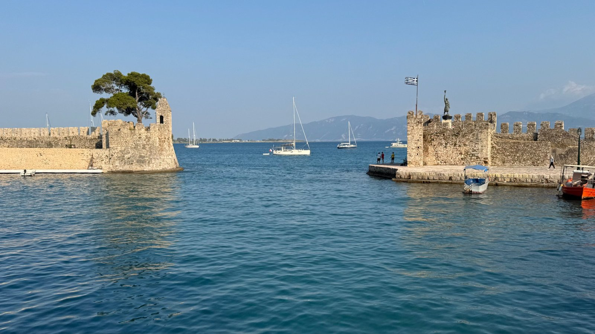
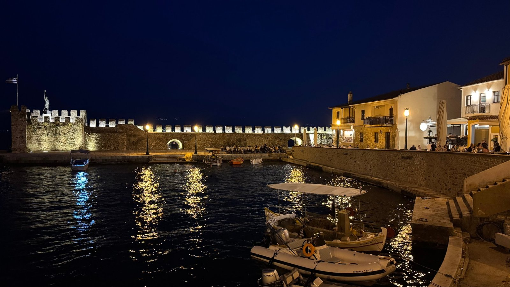
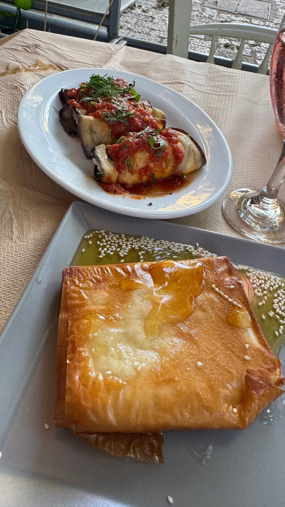
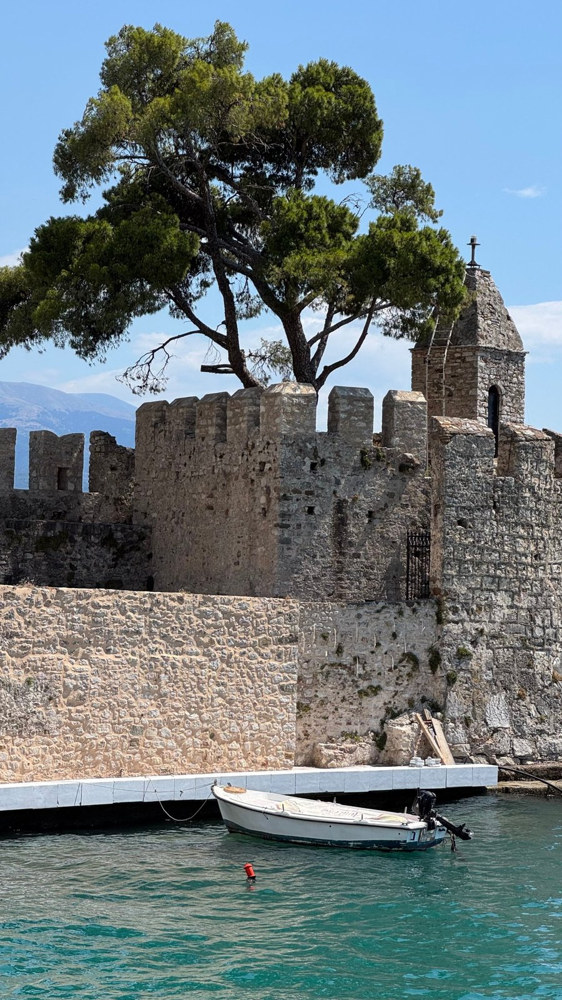
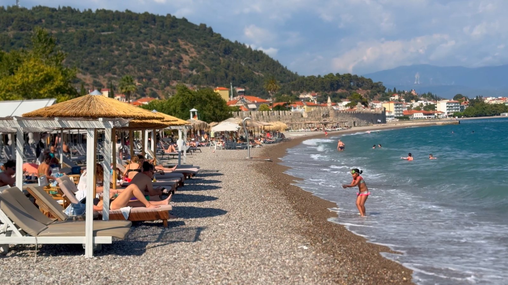
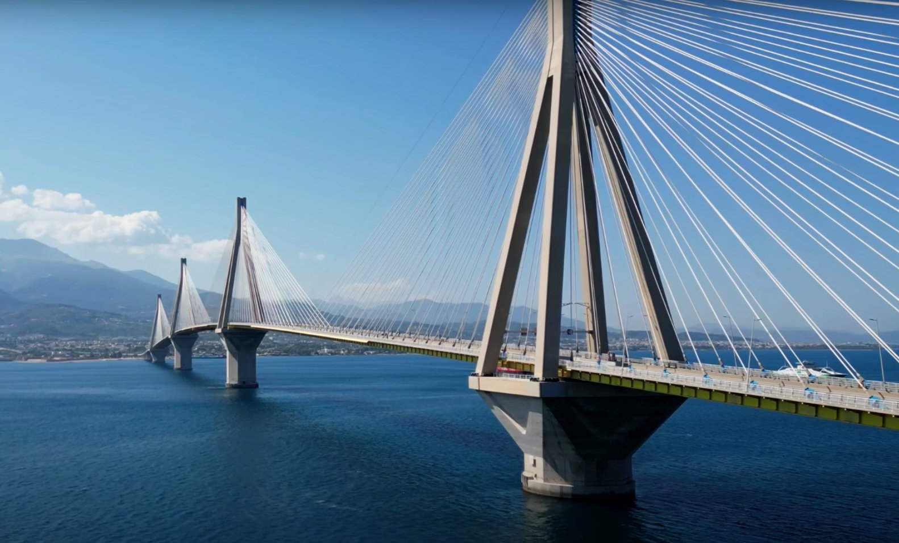

Some places are carefully researched, meticulously planned and highlighted on the itinerary months before you arrive. And then there are places like Nafpaktos. Places you stumble across almost by accident, usually when you're tired, hungry and wondering how much further you have to drive.
Nafpaktos was supposed to be nothing more than an overnight stop on our journey south towards Limeni. Instead, it turned out to be one of those unexpected discoveries that makes travelling around Greece so rewarding. And having spent just one night there, we knew we'd made a mistake.
We should have stayed longer.
WHAT NAFPAKTOS LOOKS AND FEELS LIKE

Situated on the northern shore of the Gulf of Corinth, Nafpaktos is a beautiful little coastal town with a rather spectacular setting. Its magnificent horseshoe-shaped Venetian harbour is undoubtedly the star of the show, surrounded by historic stone walls, colourful fishing boats, waterfront cafes and restaurants.
It's the sort of harbour that makes you want to pull up a chair, order something cold and put absolutely nothing on your agenda for the rest of the afternoon.
Beyond the harbour, narrow streets wind through the old town, with little boutiques, traditional shops and leafy squares giving the place a wonderfully Greek feel. There's also a lovely stretch of coastline, including Psani and Gribovo beaches, while the impressive Venetian castle sits high above the town, offering panoramic views across the rooftops and the Gulf of Corinth.
But what really makes Nafpaktos special is its atmosphere. During the day, it's relaxed and picturesque, but as the afternoon turns into evening, the town seems to wake up. The cafes fill, the restaurants spill onto the streets and the locals come out to enjoy the evening.
And it's quite a transformation.
OUR UNEXPECTED DISCOVERY
Our first encounter with Nafpaktos came about because we'd decided that driving all the way to Limeni in one go was probably a little too ambitious. So, sensibly for once, we booked an overnight stay at Okios9 Rooms and Suites, close to Psani Beach.
And what a little find it was.
The accommodation was everything we like: minimalist design, smart modern luxury and an almost obsessive attention to cleanliness. Contemporary, stylish and beautifully presented, it was a lovely place to recharge after a long day on the road.
Once we'd checked in, there was only one thing for it. Find the harbour, find a table and find something cold to drink.
We settled at Centro Porto, where we managed to secure a lovely harbour-side table. A perfect spot to watch the world go by, with the boats bobbing gently in the water and the cafes gradually filling up around us.
One sangria and one beer soon became several. Not entirely our intention, obviously, but the little bowls of crisps that seem to accompany drinks in Greece have a lot to answer for. They're practically an invitation to stay for another round. And who were we to argue?
It's a beautiful spot, and there are plenty of other lovely cafes and bars lining the harbour. You could happily spend an entire afternoon working your way along them, although your ability to remember where you parked the car might eventually become questionable.

As evening arrived, Nafpaktos became even prettier. The harbour lights came on, the historic buildings glowed and the streets filled with locals enjoying their evening. Unlike back home, where dinner at six o'clock is perfectly respectable, Greek evenings tend to get going much later. By the time we'd finished our drinks, the town was really coming alive.
And that's when we realised one night simply wasn't going to be enough.
A RETURN VISIT – AND A VERY GOOD DECISION
Fast forward a little further into our road trip. We'd been exploring the Peloponnese and were leaving Tolo, heading north towards Meteora. There was really only one obvious place to break the journey.
Nafpaktos, of course.
Unfortunately, Okios9 was fully booked, so this time we found ourselves staying at Battaglia di Lepanto Boutique Hotel, right in the heart of the old town.
And what a contrast.
Housed in a beautifully renovated listed building, this hotel has a much more traditional character. It's only around 80 metres from the historic Venetian harbour, so the location couldn't have been better.
Inside, the rooms are luxurious and tastefully decorated, combining the charm of the original building with modern comforts. Comfortable Sealy mattresses, air conditioning and lovely bathrooms stocked with quality toiletries made it a very pleasant place to stay. Some rooms also have private balconies overlooking the historic streets.
Breakfast was another highlight, with a complimentary buffet offering fresh pastries, homemade granola, local cheeses, meats, eggs and Greek coffee. Just the sort of breakfast needed before another day of exploring.
Dinner at Captain Cook
For dinner, we discovered a traditional taverna tucked away in a lovely tree-lined square. Captain Cook, located in the harbour area, turned out to be a real winner.

We ordered stuffed aubergines, fried feta drizzled with honey and a seafood risotto, accompanied by a glass of wine. Everything was superb.
It's these little discoveries that make a trip. Not necessarily the famous attractions or the places everyone tells you to visit, but the restaurants you stumble upon, the quiet squares you wouldn't otherwise have found and the evenings that turn into something memorable.
Sitting there, enjoying some excellent Greek food, we had that familiar thought: you could actually imagine living somewhere like this.
And that's quite a compliment.
BEST THINGS TO SEE AND DO IN NAFPAKTOS
Although we mainly enjoyed soaking up the atmosphere, there's plenty to see and do in Nafpaktos if you have a little longer.
1. Explore the Venetian harbour

The obvious starting point. Wander around the beautiful little harbour, admire the fishing boats and find a waterfront table for a coffee, lunch or evening drink. It's the heart of the town and somewhere you'll probably return to more than once.
2. Visit Nafpaktos Castle
Climb up through the old town towards the Venetian castle, which overlooks Nafpaktos from the hillside. The views across the town, harbour and Gulf of Corinth are spectacular, particularly on a clear day.
3. Wander through the old town
Take time to explore the narrow streets, traditional architecture, little shops and leafy squares. It's a lovely place to wander without a particular destination in mind.
4. Enjoy the beaches

Psani and Gribovo beaches offer easy access to the sea, with cafes and places to relax nearby. Perfect for a lazy afternoon if you're staying a little longer.
5. Admire the Rio–Antirrio Bridge

The impressive Rio–Antirrio Bridge connects the Peloponnese with mainland Greece across the Gulf of Corinth. It's a remarkable piece of engineering and a wonderful sight from viewpoints around Nafpaktos.
PRACTICAL TIPS FOR VISITING NAFPAKTOS
- Getting there: Nafpaktos is on the northern shore of the Gulf of Corinth, about 35 minutes from Patras across the Rio–Antirrio Bridge. It's roughly a 2.5-hour drive from Athens, and around 2.5–3 hours from the ferry port at Igoumenitsa, depending on your route and traffic.
- Where to stay: Okios9 is ideal if you enjoy contemporary boutique accommodation, while Battaglia di Lepanto is perfect for staying right in the historic centre.
- Parking: Check parking arrangements with your accommodation, particularly if staying in the old town, where streets can be narrow.
- Best time to visit: Late afternoon and evening are particularly lovely, when the harbour comes alive and the restaurants fill with locals.
- How long to stay: I'd recommend at least two nights. One night simply doesn't do it justice.
OUR VERDICT – IS NAFPAKTOS WORTH VISITING?
Absolutely. In fact, Nafpaktos is one of those places that deserves to be a destination in its own right rather than simply somewhere to stop overnight.
It has a beautiful harbour, lovely restaurants, beaches, history, boutique accommodation and, most importantly, a genuine Greek atmosphere that hasn't been lost amongst the tourist trappings.
We arrived expecting a bed for the night and left with another place firmly added to our list of favourites.
It's the sort of town where you could imagine having a little apartment, wandering down to the harbour for your morning coffee, spending the afternoon by the sea and finishing the day with a long Greek dinner.
And if that sounds like a pretty good way to spend retirement, well, we're certainly not going to argue.
Would we go back? Definitely.
One night wasn't enough. Next time, we're staying longer.